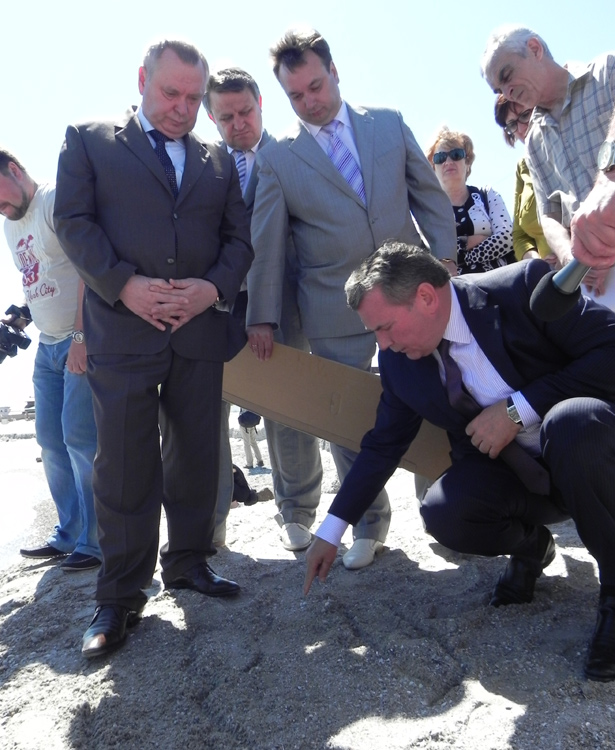

Две недели в СМИ обсуждали отсутствие мэра Бердянска на посту. У него не отвечал телефон. На официальных мероприятиях градоначальника тоже не было видно. В прессе уже заговорили об отставке Алексея Бакая. Но мэр, неожиданно, вернулся.

Как оказалось, градоначальник курортного города две недели был в отпуске. Приступив к работе и изучив слухи о своей отставке, Алексей Бакай поспешил их опровергнуть. Пресс-служба мэра Бердянска распространила следующее интервью:
"В некоторых СМИ появилась даже информация о том, что городской голова чуть ли не сбежал из города. Потом стали утверждать, что как только Алексей Бакай вернется, он тут же сам уйдет в отставку.
Так что же случилось и куда собирается уходить мэр? Эти вопросы мы задали Алексею Анатольевичу, как только он вышел на работу.
– Я никуда не ухожу, а что будет завтра – только Богу известно, – сразу констатировал городской голова. – Согласно трудовому законодательству мэр – такой же человек, как и все. Он имеет право на тарифный отпуск. Я этим правом не пользовался более двух лет. В отпуск собирался пойти еще с января прошлого года. Но все не складывалось. В феврале этого года решил, что надо все-таки немного обследоваться и поправить свое здоровье. О том, что я ухожу в отпуск – знали работники исполкома, депутаты городского совета. Из этого никто не делал секрета.
– Тем не менее, по городу были распущены самые невероятные слухи. А некоторые СМИ их активно подхватили…
– Бердянск не будет Бердянском, если в городе не будут ходить какие-то слухи. Пусть даже самые невероятные. Со слухами людям веселее жить и к этому надо нормально относиться. Что же касается средств массовой информации, то я не вправе тут давать каких-либо рекомендаций. А просто как читатель скажу, что в последнее время слишком много в СМИ стало слухов, домыслов, и намного меньше реальных фактов… Мне кажется, это не правильно. Но если такова редакционная политика, то пусть эта политика остается на совести этих СМИ.
- И все же утверждают, что на предприятиях Вашей семьи проходит ряд проверок. На фоне того, что творится сегодня в Мелитополе, многие посчитали, что это не спроста…
– За время, что я работаю городским головой Бердянска, и предприятие, которым руководит мой сын, и сам исполком проверялись многократно и самыми различными службами, а также способами. Считаю это нормальным. Кроме тех случаев, когда, если помните, показательно арестовывали директора горводоканала Валерия Семенюту и бывшего заместителя городского головы Василия Федосова. Напомню также, что и в одном, и в другом случае все обвинения оказались безосновательными. Кому и для чего это надо было – известно. Но это все мы выдержали и пережили. Тем более что никаких серьезных нарушений ни в работе структур исполкома (а вы знаете, что за два года мы освоили порядка ста миллионов государственных средств), ни в работе предприятия, которым руководит сын, выявлено не было. А вообще проверки держат в тонусе и помогают организовывать работу так, как это нужно. Поэтому проверяющим я бы даже сказал спасибо за то, что помогают делать все так, как положено.
- А как Вы относитесь к тем событиям, которые состоялись без Вас. Я имею в виду скандальную внеочередную сессию, состоявшуюся 18 февраля. На ней, как Вы знаете, с третьего раза были приняты вопросы по депутатским комиссиям, которые ранее Вы дважды ветировали.
– Напомню, что и в первый, и во второй раз, когда я пользовался своим правом вето, депутатский корпус соглашался с моей аргументацией и вносил изменения в проекты решений по депутатским комиссиям. Хочу обратить внимание на то, что и в вопросе по регламенту городского совета, и в вопросах по депутатским комиссиям принятые решения очень отличаются от тех проектов, которые предлагались в декабре. Это доказательство правомерности и обоснованности действий городского головы. Сегодня это уже никто не оспаривает.
Хочу обратить также внимание на то, что "проваленные" группой депутатов 31 января хозяйственные вопросы 25 февраля на внеочередной сессии горсовета были приняты без принципиальных и каких-либо существенных изменений. 31 января исполнительную власть обвиняли и в завышении смет, и в неправильной расстановке приоритетов. Однако 25 февраля все проекты хозяйственных решений прошли практически в том же виде, в каком предлагались месяцем ранее. Плохо одно, что было потеряно время. Месяц коммунальные предприятия города не могли полноценно работать и выполнять стоящие перед ними задачи. Разве это на благо города?!. Горячим головам необходимо остыть, не позорить совет и не мешать работать исполкому. А мне и депутату Верховной Рады пора готовить промежуточный ответ о нашей совместной работе по вопросам развития города. Трудновато это будет сделать…
- А как Вы относитесь к тому, что на внеочередной сессии 18 февраля, несмотря на то, что Ваш шаг по ветированию вопросов по депутатским комиссиям был признан правомерным, депутаты внесли в них изменения и с большими потугами с длительными спорами, но, тем не менее, приняли "скандальные" решения в третий раз.
– Юридически и по-человечески я считаю это не правильным. Говорил раньше и повторюсь вновь. Ни вопрос по регламенту работы совета, ни вопросы по депутатским комиссиям не имеют для города никакого принципиального экономического или социального значения. Даже сегодня, спустя три месяца споров и дискуссий большая часть горожан так и не поняла сути спора и того, как он затрагивает или не затрагивает их интересы.
То есть никаких оснований для спешки и для внесения раскола в городской совет не было. Если бы горячие головы услышали меня еще в декабре, когда я предлагал снять все спорные вопросы, собраться вне сессии, обсудить их и урегулировать, то не было бы ни двух вето, ни всех тех страстей, ни проблем с финансированием текущего содержания города.
18 февраля точно также не было никаких оснований для спешки. Просто некоторым захотелось "продавить" спорные вопросы в отсутствие городского головы. Ну, "продавили" и что дальше? Был нарушен закон о публичной информации. В планово-бюджетной комиссии и в комиссии по предпринимательской деятельности оказалось по два председателя… В итоге группа депутатов вынуждена была обратиться в прокуратуру за разъяснениями о правомерности принятых решений. А виной всему снова амбиции, игра мышцами и спешка. Просто пытались показать свою, якобы, силу. Иного рационального объяснения происходящему нет. Мы до сих пор не услышали четкого обоснования, для чего нужна была вся эта спешка. А ведь абсолютно все вопросы можно было урегулировать за столом переговоров. Кому и для чего это было надо, я ранее уже открыто и конкретно неоднократно говорил. На арене одни и те же. Мой призыв к достижению взаимопонимания услышан не был. Но все-таки, надеюсь, что услышат. В любом случае время всех рассудит и расставит все по местам.
Обидно только, что не конструктивную позицию занял секретарь совета Владимир Безверхий. Хотя при обсуждении спорных вопросов лично у него никаких противоречий и непониманий не было. Его просто подставляют и "насилуют", а отказать "команде" он не может. Считаю, что так дальше работать нельзя.
О себе скажу, что работать могу и способен. К обсуждению спорных вопросов, к конструктиву, поиску взаимопонимания всегда готов. Но работать на согнутых или полусогнутых ногах не могу. Это не мое. Мышиной возней заниматься желания у меня нет.
– Ваше мнение, как будут развиваться события дальше?
– На мой взгляд, вариант должен быть только один – плодотворная работа. Город ждет от совета и исполнительной власти решения насущных проблем, а не склок и скандалов вокруг надуманных вопросов. Уверен, страсти улягутся. Я уже не раз говорил, что подавляющее большинство депутатов городского совета – грамотные, профессиональные и переживающие за город люди. Хочется верить, что все будет хорошо!


Ммм
О чем
ждали с нетерпением …)